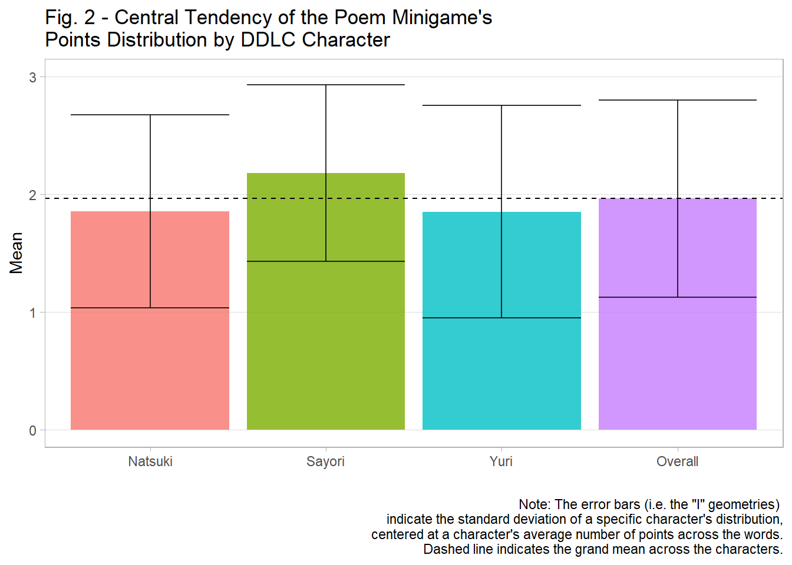
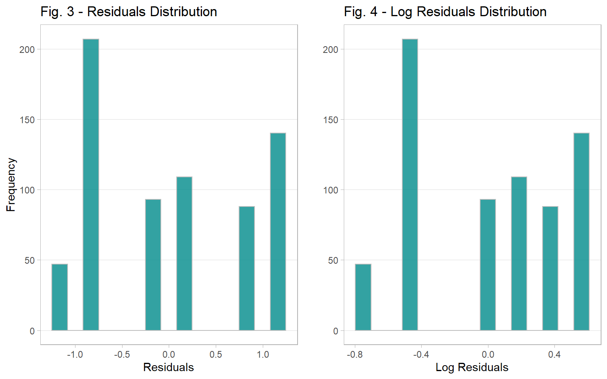
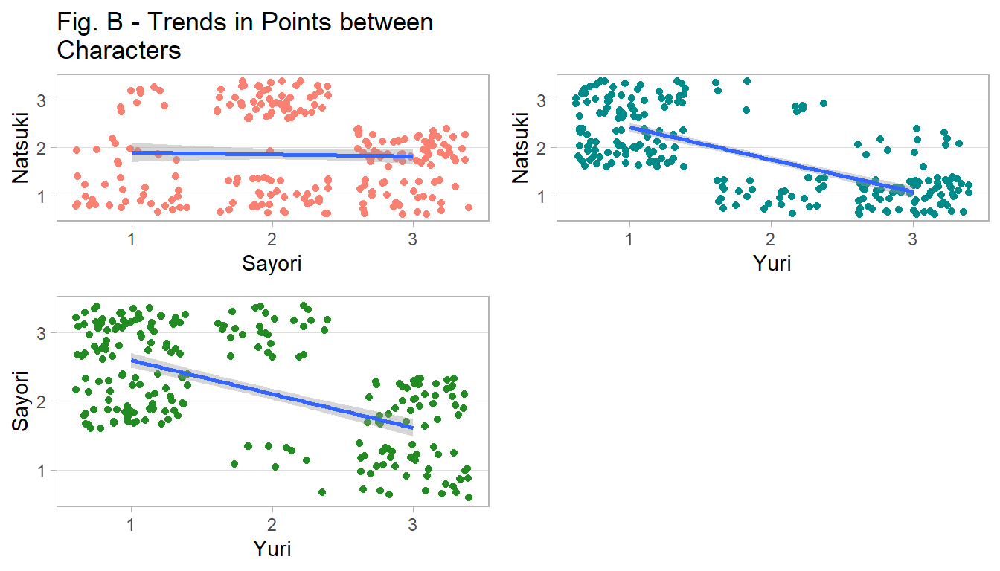

Introduction
Doki Doki Literature Club (henceforth known as DDLC), developed by Team Salvato,1 is a visual novel video game that initially appears as an average Japanese dating simulator, eventually shifting into the horror genre and being supplemented with meta-elements that affect the game’s interface and audio.2 Such conventions have propagated inquiries by scholars, such as David Neri (2017), who comments that the “deliberate breaks in the 4th wall” humanizes the characters.3 While this observation is noteworthy, the simple minigame that DDLC employs is of particular interest.
During Acts 1 and 2 of the game, a minigame called “Poem Game” occurs. For 20 rounds, the player chooses a word from a list of 10.4 Selecting specific words grants between one to three points toward Natsuki, Sayori, and Yuri–if a character finds a word to be most affable, their jumping animation plays to indicate that they have received the most points. As with a typical dating simulator, the character that receives the most points will grant additional scenes with said character. While other scholars comment that this minigame is used as essentially a red herring,5 what they have not explored is how this poem minigame is used in the context of the plot from a numerical standpoint. Particularly, whether the distribution of points is geared toward a specific character and how that may affect the interpretation of the game’s themes.
As such, the focus of this study is to determine the existence and extent of statistical bias towards any of the DDLC characters with respect to the points distribution of the Poem Minigame. The results of this study show that the bias is towards Sayori (2.180 +/- 0.819 vs. overall mean of 1.962 +/- 0.839), who is the first character in the game to experience a traumatic outcome, suggesting that the statistical component of the Poem Minigame–whether intentional or not–attempts to gear the player towards her to accentuate further the emotional impact of her death in Act 1.
1 Methodology
1.1 Overview
Using the R programming language, the methods used were frequency distributions, means and standard deviations (SDs), ANOVA, and the Tukey HSD method. The frequency distributions are used to compare the spread of points across each DDLC character that receives points in the Poem Minigame: Natsuki, Sayori, and Yuri. This method allows the detection of outliers or general patterns of the distribution among these characters. The means and SDs would reveal the central tendencies of the distributions, complimenting the ANOVA and Tukey HSD analysis that test whether there exists statistically significant differences among and between the average number of points of the characters. If a statistically significant difference exists, it would indicate that there is “bias” in the distribution of points, since one would presume a uniform distribution of points in a fair game. However, ANOVA assumes a normal distribution of the residuals: if this condition is not met, then the Kruskal-Wallis6 and Dunn Tests7 will be conducted, as they do not assume normally distributed residuals.8
1.2 Models
The models are defined as follows: \[Model1:Value = \mu_1 + Character_{1i} + \epsilon_{1ij}\] \[Model2:log(Value) = \mu_2 + Character_{2i} + \epsilon_{2ij},\] where \(\mu_1\) and \(\mu_2\) are the common effects; \(Character_{1i}\) and \(Character_{2i}\) are the treatment variables (which represent the DDLC characters in the Poem Minigame); and epsilons are the error terms for their respective models. These models will be estimated by ANOVA and the Kruskal Wallis Test; however, for the latter, only Model 1 will be estimated, as Model 2 is an attempt to normalize the residuals without resorting to a non-parametric test: if its residuals are not normally distributed, then the Kruskal Wallis test is necessary.
1.3 Hypotheses
The following are the hypotheses: \[H_0: \mu_{Natsuki} = \mu_{Sayori} = \mu_{Yuri}\] \[H_1: \mu_{Natsuki} \neq \mu_{Sayori} \neq \mu_{Yuri},\] where each of the \(\mu\)’s represents the means for a particular character. If the means are relatively similar, then we cannot make a case that there is bias in the distribution of points in the Poem Minigame. Otherwise, the mean points among the characters are not equal and thus the distribution of points may be biased towards a particular character, where we define a statistically significant difference when p < 0.05. So, in this paper, I expect that the minigame gears the player toward Sayori based on the events leading to the end of Act 1.9
2 Data
2.1 Overview
The data for the points distribution of the Poem Minigame were obtained from the Doki Doki Literature Club wiki,10 being stored in a comma-separated-values (CSV) file for importing into R–there are a total of 228 words recorded. What follows is the R code that loads the necessary libraries for analysis, importing and displaying the first few rows of the dataset (see Appendix A for the full display).
Each character can receive 1 to 3 points, depending on the player’s selection of the words. Generally speaking, Natsuki prefers “cute” and shorter words such as “boop,”" whereas Yuri opts for more complex ones such as “vivacious.” If a player picks something of the former, Natsuki receives more points and Yuri receives fewer (see Appendix B for visualizations of the point-distribution relationships between the characters). Sayori, on the other hand, prefers words that can be happy such as “awesome” or bittersweet such as “raincloud.”
The subsections Setup and Import below show the R code that loads the necessary libraries for analysis and import steps, respectively.
2.2 Setup
Before the analysis is conducted in R, a set of libraries are loaded for data management, presentation, and methodological purposes. First, the tidyverse library is loaded for its data management and plotting functions (primarily from dplyr and ggplot2), where magrittr is loaded for its convenient update pipe operator (%<>%) that allows one simultaneously to pass and update their data object. The libraries knitr and kableExtra are loaded so that the presentation of the tables can match closer to that of the APA style. The library broom is used to convert model and statistical test outputs into a data frame that knitr and kableExtra functions can accept. The gridExtra library is used to combine ggplot2 functions together. Finally, the FSA library is used to conduct Dunn’s Test as a post-hoc procedure to Kruskal-Wallis.11
For reproducibility purposes, a function try_load() is created: it attempts to find out whether a library has already been installed, and if not, attempts to install and load it. The function Map() is then used to iterate through loading the aforementioned libraries. Afterward, the next step is to import the data.
2.2.1 R Code: Setup
# Name libraries to use for analysis.
libs <- c('tidyverse', # For data management.
'magrittr', # For data management.
'knitr', # For presenting tables.
'kableExtra', # For presenting tables.
'broom', # For tidying models/tests.
'gridExtra', # For placing plots on a grid.
'FSA') # For Dunn's Test
# Write function for loading libraries or installing them if not available.
try_load <- function(x) {
if (!require(x, character.only = TRUE)) {
install.packages(x)
library(x, character.only = TRUE)
}
}
# Load libraries
Map(try_load, libs)2.3 Import
To import the dataset into R, we copy the data from the DDLC Poem Game wiki page12 and insert them into a CSV file. We then use the read.csv() function to import the data, maintaining that the column word is a character variable and not a factor. To preview the data, we apply the kable function fo the first five rows of the dataset, setting booktabs = TRUE so that we achieve a table with a clean look. The result is Table 1–see Appendix A for the full dataset.
2.3.1 R Code: Import
# Import Dataset
## Saved data from the following link into a CSV: https://ddlcwiki.net/wiki/Poem_game)
data <- read.csv('ddlc.csv', stringsAsFactors = FALSE)
# Show the first few rows of the dataset
kable(head(data, 5),
booktabs = TRUE,
caption = 'DDLC Points Distribution Data (First Five Rows)') %>%
kable_styling(full_width = TRUE, latex_options = "hold_position") %>%
footnote(general = 'https://ddlcwiki.net/wiki/Poem_game',
general_title = 'Data Source:',
footnote_as_chunk = TRUE)| Word | Sayori | Natsuki | Yuri |
|---|---|---|---|
| adventure | 3 | 2 | 1 |
| afterimage | 1 | 1 | 3 |
| agonizing | 2 | 1 | 3 |
| alone | 3 | 1 | 2 |
| amazing | 3 | 2 | 1 |
| Data Source: https://ddlcwiki.net/wiki/Poem_game |
3 Results
3.1 Overview
The purpose of this section is to demonstrate the results of the analysis based on the methodology provided. First, we examine the distribution of the points toward the characters. Next, we compare the central tendencies of the distributions for each of the characters. Then, we conduct ANOVA and Tukey HSD tests to determine whether there exists a statisitcally significant difference in the mean points among the characters, diagnosing the residuals afterward to know whether the residuals are normally distributed. Finally, after determining that the residuals are not normally distributed, I conduct the Kruskal-Wallis and Dunn’s Tests to conclude whether there truly is a statisitcally significant difference.
3.2 Distribution of Points
To create Figure 1 (Points Distribution in the DDLC Poem Minigame), I pivot the original dataset into longform so that we have three columns: Words, Character, and Value–I do this procedure so that plotting the histograms by character could be done simultaneously rather than consequentially. Next, I create a theme called theme_light2(), which is a variation of ggplot2’s theme_light() such that the minor gridlines are removed, as well as the major x-axis ones. Finally, we use ggplot(), geom_histogram(), and facet_wrap() to plot the histograms of the points for each character. From these histograms in Figure 1, most words fall under the 1-point category for both Natsuki and Yuri; but for Sayori, most of her words fall in the 2-point category. Yuri receives the least amount of 2-point words and Natsuki the 3-point words. In contrast, with respect to the 3-point category, Sayori receives the most relative to Natsuki and Yuri. Overall, Sayori has the advantage in obtaining the most frequent 2- and 3-point words.
3.2.1 R Code: Distribution of Points
# Pivot the dataset.
data2 <- gather(data, 'Character', 'Value', 2:4)
# Create a function that sets up the background of the plot.
theme_light2 <- function() {
theme_light() +
theme(panel.grid.minor = element_blank(),
panel.grid.major.x = element_blank())
}
# Generate the plot.
ggplot(data2) +
aes(x = Value, fill = Character) +
geom_histogram(bins = 3, col = 'gray', alpha = 0.8) +
facet_wrap(~ Character) +
guides(fill = FALSE) +
labs(x = 'Points',
y = 'Frequency',
title = 'Fig. 1 - Points Distribution in the DDLC Poem Minigame') +
scale_x_continuous(breaks = 1:3) +
theme_light2()
3.3 Central Tendency of the Points
This subsection describes the central tendency of the distribution of the points for each character. Specifically, the individual means and standard deviations (SDs) are discussed, being compared to each other to determine whether there is a difference from a high-level view (i.e., to see whether the means are relatively similar or dissimilar without any statistical tests at this point). To assess the statistical significance among the means, the ANOVA results are presented in section 5.4.
To generate the central tendency of the points among the characters, we apply the aggregate() function and pass an anonymous function that uses mean() and sd() simultaneously; however, because the output of aggregate() in this form will nest the information, we execute do.call(data.frame, l), where l is the aggregated list, to unnest the information. We then rename the columns so that they make more sense to the reader. Finally, we use kable() to generate the mean and SD table.
In this table, Natsuki has an average score of 1.855 +/- 0.819; Sayori has the highest average at 2.180 +/- 0.750; and Yuri has the least at 1.851 +/- 0.903 (Table 2; see Figure 2 for a bar-graph version). With respect to the overall mean, it is 1.962 +/- 0.839, which suggests that Sayori’s points maybe be inflating the overall mean–so to speak–due to her having the average points being more dissimilar to Natuski and Yuri than the reverse: in other words, while Natuski and Yuri have similar means that both round to 1.9, Sayori’s rounds to 2.2, which further suggests that the “true” mean–if the spread of points were under a uniform distribution–would be around 1.800.
3.3.1 R Code: Central Tendency of the Points
# Calculate the mean and SDs of the points for each character.
msd <- aggregate(Value ~ Character,
data2,
function(x) c(Mean = round(mean(x), 3), SD = round(sd(x), 3))) %>%
do.call(data.frame, .)
# Rename the columns.
names(msd) <- c('Character', 'Mean', 'SD')
msd %<>%
rbind(data.frame(Character = 'Overall',
Mean = round(mean(data2$Value), 3),
SD = round(sd(data2$Value), 3)))
# Show the means and standard deviations.
kable(msd, booktabs = TRUE, caption = 'Central Tendency of the Points') %>%
kable_styling(full_width = TRUE, latex_options = "hold_position")| Character | Mean | SD |
|---|---|---|
| Natsuki | 1.855 | 0.819 |
| Sayori | 2.180 | 0.750 |
| Yuri | 1.851 | 0.903 |
| Overall | 1.962 | 0.839 |
3.3.2 R Code: Central Tendency of the Points Bar Graph
# Generate a plot of means and SDs.
ggplot(msd) +
aes(x = Character, y = Mean, fill = Character) +
geom_bar(stat = 'identity', alpha = 0.8) +
geom_errorbar(ymin = msd$Mean - msd$SD,
ymax = msd$Mean + msd$SD,
alpha = 0.8) +
geom_hline(yintercept = mean(msd$Mean), lty = 2) +
ylim(0, 3) +
labs(x = '',
title = 'Fig. 2 - Central Tendency of the Poem Minigame\'s
Points Distribution by DDLC Character',
caption = 'Note: The error bars (i.e. the "I" geometries)
indicate the standard deviation of a specific character\'s distribution,
centered at a character\'s average number of points across the words.
Dashed line indicates the grand mean across the characters.') +
guides(fill = FALSE) +
theme_light2()
3.4 ANOVA
The ANOVA model tests whether there exists an overall statistically significant difference in the means among Natsuki, Sayori, and Yuri. This idea is important on the basis that there should not be a statistically significant difference if the spread of the points follow a uniform distribution. However, as noted in the previous subsection 5.3, the means and SDs are not uniform across the characters. Therefore, the ANOVA will assess this observation, being followed by a Tukey HSD test to examine pairwise-mean tests to see where the difference occurs.
To estimate the ANOVA models in R, we employ the aov() function. Then we convert the results into a dataframe using the tidy() function from the broom library, rounding the results to three significant digits. Then after adjusting the column names to be more understandable of what the statistical metrics are to the reader, we use the kable() function to produce Tables 3 and 4. Based on these tables, there exists a statistically significant difference among the means ((\(F_1\), \(p_1\))) = (11.891, < 0.001) and (\(F_2\), \(p_2\)) = (15.184, < 0.001) respectively). To test where the specific difference occurs, we conduct the Tukey HSD test.
3.4.1 R Code: ANOVA Models
# Estimate ANOVA.
anova1 <- aov(Value ~ Character, data2)
anova2 <- aov(log(Value) ~ Character, data2)
# "Tidy" ANOVA (i.e. convert results into a data frame).
anova1_tidy <- tidy(anova1)
anova2_tidy <- tidy(anova2)
# Round results to three significant digits.
anova1_tidy[, 3:6] %<>% round(., 3)
anova2_tidy[, 3:6] %<>% round(., 3)
# Rename columns so that they are understandable.
names(anova1_tidy) <- c('Term', 'DF', 'Sum of Squares',
'Mean Square', 'F', 'p')
names(anova2_tidy) <- names(anova1_tidy)
# ANOVA 1
kable(anova1_tidy, booktabs = TRUE, caption = 'ANOVA Results') %>%
kable_styling(full_width = TRUE, latex_options = "hold_position") %>%
footnote(general = 'DF = Degrees of Freedom.',
footnote_as_chunk = TRUE)| Term | DF | Sum of Squares | Mean Square | F | p |
|---|---|---|---|---|---|
| Character | 2 | 16.231 | 8.115 | 11.891 | 0 |
| Residuals | 681 | 464.781 | 0.682 | NA | NA |
| Note: DF = Degrees of Freedom. |
# ANOVA 2
kable(anova2_tidy, booktabs = TRUE, caption = 'Log ANOVA Results') %>%
kable_styling(full_width = TRUE, latex_options = "hold_position") %>%
footnote(general = 'DF = Degrees of Freedom.',
footnote_as_chunk = TRUE)| Term | DF | Sum of Squares | Mean Square | F | p |
|---|---|---|---|---|---|
| Character | 2 | 6.373 | 3.187 | 15.184 | 0 |
| Residuals | 681 | 142.924 | 0.210 | NA | NA |
| Note: DF = Degrees of Freedom. |
3.5 Tukey HSD
To conduct the Tukey HSD test to examine pairwise-mean comparisons in R, we use the TukeyHSD() function. After employing it and rounding the values to three significant digits, we rename the colukmns so that the metrics are understandable to the reader. We then use kable() to produce Tables 5 and 6.
In Table 5, the difference in means between Sayori and Natsuki is 0.325 and is statistically significant(CI = [0.143, 0.506], p < 0.001). In contrast to the stark difference, Yuri and Natsuki’s difference in means is -0.004 and not statistically significant (CI = [-0.186, 0.177], p = 0.998). Between Yuri and Sayori, the difference in means is -0.329 and is statistically significant (CI = [-0.511, -0.147], p < 0.001). In turn, Sayori statistically has greater means than Natuski and Yuri at the 5% margin-of-error level.
In Table 6, the difference in log means between Sayori and Natsuki is 0.192 and is statistically significant (CI = [0.091, 0.293], p < 0.001). Inversely, Yuri and Natsuki’s difference in log means is -0.023 and is not statistically significant (CI = [-0.124, 0.078], p = 0.851). Between Yuri and Sayori, the difference in log means is -0.215 (CI = [-0.316, -0.115], p < 0.001). In turn, Sayori statistically has greater means than Natuski and Yuri at the 5% margin-of-error level.
3.5.1 R Code: Tukey HSD Tests
# Obtain the Tukey HSD results
th1 <- round(TukeyHSD(anova1)$Character, 3)
th2 <- round(TukeyHSD(anova2)$Character, 3)
# Rename the columns
colnames(th1) <- c('Difference in Means', 'Lower CI Bound', 'Upper CI Bound',
'Adjusted p-value')
colnames(th2) <- colnames(th1)
# Display the Tukey HSD results.
## Tukey HSD 1
kable(th1, booktabs = TRUE, caption = 'Tukey HSD Results') %>%
kable_styling(full_width = TRUE, latex_options = "hold_position") %>%
footnote(general = 'CI = Confidence Interval',
footnote_as_chunk = TRUE)| Difference in Means | Lower CI Bound | Upper CI Bound | Adjusted p-value | |
|---|---|---|---|---|
| Sayori-Natsuki | 0.325 | 0.143 | 0.506 | 0.000 |
| Yuri-Natsuki | -0.004 | -0.186 | 0.177 | 0.998 |
| Yuri-Sayori | -0.329 | -0.511 | -0.147 | 0.000 |
| Note: CI = Confidence Interval |
## Tukey HSD 2
kable(th2, booktabs = TRUE, caption = 'Log Tukey HSD Results') %>%
kable_styling(full_width = TRUE, latex_options = "hold_position") %>%
footnote(general = 'CI = Confidence Interval',
footnote_as_chunk = TRUE)| Difference in Means | Lower CI Bound | Upper CI Bound | Adjusted p-value | |
|---|---|---|---|---|
| Sayori-Natsuki | 0.192 | 0.091 | 0.293 | 0.000 |
| Yuri-Natsuki | -0.023 | -0.124 | 0.078 | 0.851 |
| Yuri-Sayori | -0.215 | -0.316 | -0.115 | 0.000 |
| Note: CI = Confidence Interval |
3.6 ANOVA Residual Diagnostics
The purpose of this subsection is to diagnose the residuals from the ANOVA model to determine whether an additional test is needed if the residuals do not follow a normal distribution. To do so, we first set up a data frame of predicted values and residuals from the two ANOVA models (the non-logged and logged versions). Then We generate histograms for both of them. As such, based on Figures 3 and 4, the residuals do not resemble a normal distribution: upon examination, they seem to have a bimodal distribution with an emphasis on the negative side (in other words, skewed left), suggesting that a non-parametric test is required to truly test the means between the characters–the Kruskal-Wallis test is performed in the next subsetcion.
3.6.1 R Code: Residuals Setup
3.6.2 R Code: Residuals Distributions
fr1 <- ggplot(fitres) +
aes(x = res1) +
geom_histogram(bins = 15, fill = 'cyan4', col = 'gray', alpha = 0.8) +
labs(y = 'Frequency',
x = 'Residuals',
title = 'Fig. 3 - Residuals Distribution') +
theme_light2()
fr2 <- ggplot(fitres) +
aes(x = res2) +
geom_histogram(bins = 15, fill = 'cyan4', col = 'gray', alpha = 0.8) +
labs(y = '',
x = 'Log Residuals',
title = 'Fig. 4 - Log Residuals Distribution') +
theme_light2()
grid.arrange(fr1, fr2, nrow = 1, ncol = 2)
3.7 Kruskal-Wallis Test
To conduct the Kruskal-Wallist test, we employ the kruskal.test() function, “tidying” the output so that they are in a clean data frame to be able to produce a kable table. Based on Table 7, there is a statistically significant difference among the characters’ mean scores (test statistic = 23.732, p < 0.001). To know whether the pairwise means are statistically significant, Dunn’s Test must be performed.
3.7.1 R Code: Kruskal-Wallis Test
kw <- tidy(kruskal.test(Value ~ Character, data2))
kw[, 1:2] %<>% round(., 3)
kable(kw, booktabs = TRUE, caption = 'Kruskal-Wallis Results') %>%
kable_styling(full_width = TRUE, latex_options = "hold_position")| statistic | p.value | parameter | method |
|---|---|---|---|
| 23.732 | 0 | 2 | Kruskal-Wallis rank sum test |
3.8 Dunn Test
To conduct Dunn’s Test, dunnTest() from the FSA library is used. Based on Table 8, the difference between Nastuki and Sayori (Z = -4.163, p < 0.001) and between Sayori and Yuri (Z = 4.273, p < 0.001) are statistically significant, whereas the difference between Natsuki an dYuri is not (Z = 0.110, p = 0.913). This finding indicates that Sayori has a statistically significantly higher mean than the other two characters, which further implies a statistical bias towards Sayori in the Poem Minigame.
3.8.1 R Code: Dunn Test
dt <- dunnTest(Value ~ Character, data2, method = 'bh')$res %>%
as.data.frame()
names(dt) <- c('Comparison', 'Z', 'Unadjusted p-value',
'Adjusted p-value')
dt[, 2:4] %<>% round(., 3)
kable(dt, booktabs = TRUE, caption = 'Dunn Test Results') %>%
kable_styling(full_width = TRUE, latex_options = "hold_position")| Comparison | Z | Unadjusted p-value | Adjusted p-value |
|---|---|---|---|
| Natsuki - Sayori | -4.163 | 0.000 | 0.000 |
| Natsuki - Yuri | 0.110 | 0.913 | 0.913 |
| Sayori - Yuri | 4.273 | 0.000 | 0.000 |
4 Conclusion
4.1 Discussion
Some may argue that Poem Minigame is simply a ruse with no inherent underlying meaning nor use. However, the results of this study show that the bias in the Poem Minigame is towards Sayori (2.180 +/- 0.819 vs. overall mean of 1.962 +/- 0.839), who is the first character in the game to experience a traumatic outcome, implying that the statistical aspect of the minigame may have geared the player towards her to emphasize the emotional impact of the end of Act 1. After all, if a character receives the most points, the game plays additional, intimate scenes with said character, which increases the player’s affability to her. Thus, the ending of Act 1 would be more heart-wrenching than if the words in the poem minigame were more fairly weighted (i.e. the points being weighted in a way such that each character would have an equal chance of receiving points).
4.2 Limitations
Despite the robust tests presented in this paper, there are a number of limitations. Namely, this paper assumes that the probability of each word in the minigame being selected by the player is weighted equally (i.e. a uniform probability distribution of the words). In DDLC, 10 words are presented in each round, so the probabilities may be shifted per round and as such may affect one of the assumptions in the ANOVA models. Future work may take this issue into account by emploiying a Monte Carlo simulation to test multiple ANOVA outcomes.
A second limitation is that there is little-to-no literature examining the statistical components of DDLC. As such, knowledge regarding them are sparse if not non-existent. Nonetheless, the results presented in this paper should serve as a baseline for further research.
References
Corder, Gregory and Dale Foreman (2009). Nonparametric Statistics for Non-Statisticians. Hoboken: John Wiley & Sons. p. 99-105.
Doki Doki Literature Club. https://ddlc.moe/. Accessed 1/20/2020.
Doki Doki Literature Club Wiki. Poem Game. https://ddlcwiki.net/wiki/Poem_game. Accessed 1/20/2020.
Dokiu Doki Literature Club Wiki. Act 1. https://doki-doki-literature-club.fandom.com/wiki/Act_1. Accessed 1/20/2020.
Dunn, Olive Jean (1964). Multiple comparisons using rank sums. Technometrics: 6(3): 241-252.
Neri, David (2018). An Examination of Western Romance/Horror Hybrid Visual Novels commentary on traditional Eastern VN Romance Tropes. ReVisions. https://revisions.pubpub.org/pub/odpf39ub. Accessed 1/20/2020.
Ogle, D.H., P. Wheeler, and A. Dinno (2019). FSA: Fisheries Stock Analysis. R package version 0.8.26, https://github.com/droglenc/FSA.
Roe, Curie and Alex Mitchell (2019). “Is This Really Happening?”: Game Mechanics as Unreliable Narrator. Digital Games Research Association. Proceedings of DiGRA 2019.
Appendix A - Full Dataset
R Code: Full Dataset
kable(data,
booktabs = TRUE,
longtable = TRUE,
caption = 'DDLC Points Distribution Data',
row.names = TRUE,
linesep = '') %>%
kable_styling(full_width = TRUE, latex_options = c('repeat_header')) %>%
footnote(general = 'https://ddlcwiki.net/wiki/Poem_game',
general_title = 'Data Source:',
footnote_as_chunk = TRUE)| Word | Sayori | Natsuki | Yuri | |
|---|---|---|---|---|
| 1 | adventure | 3 | 2 | 1 |
| 2 | afterimage | 1 | 1 | 3 |
| 3 | agonizing | 2 | 1 | 3 |
| 4 | alone | 3 | 1 | 2 |
| 5 | amazing | 3 | 2 | 1 |
| 6 | ambient | 2 | 1 | 3 |
| 7 | analysis | 1 | 1 | 3 |
| 8 | anger | 2 | 3 | 1 |
| 9 | anime | 2 | 3 | 1 |
| 10 | anxiety | 2 | 1 | 3 |
| 11 | atone | 2 | 1 | 3 |
| 12 | aura | 2 | 1 | 3 |
| 13 | awesome | 3 | 2 | 1 |
| 14 | beauty | 3 | 2 | 1 |
| 15 | bed | 3 | 2 | 1 |
| 16 | blanket | 1 | 3 | 2 |
| 17 | bliss | 3 | 2 | 1 |
| 18 | boop | 2 | 3 | 1 |
| 19 | bouncy | 2 | 3 | 1 |
| 20 | breathe | 1 | 2 | 3 |
| 21 | broken | 3 | 1 | 2 |
| 22 | bubbles | 2 | 3 | 1 |
| 23 | bunny | 2 | 3 | 1 |
| 24 | cage | 1 | 2 | 3 |
| 25 | calm | 3 | 1 | 2 |
| 26 | candy | 2 | 3 | 1 |
| 27 | captive | 2 | 1 | 3 |
| 28 | charm | 3 | 2 | 1 |
| 29 | cheeks | 2 | 3 | 1 |
| 30 | cheer | 3 | 2 | 1 |
| 31 | childhood | 3 | 2 | 1 |
| 32 | chocolate | 2 | 3 | 1 |
| 33 | climax | 1 | 2 | 3 |
| 34 | clouds | 2 | 3 | 1 |
| 35 | clumsy | 3 | 2 | 1 |
| 36 | color | 3 | 2 | 1 |
| 37 | comfort | 3 | 2 | 1 |
| 38 | contamination | 1 | 1 | 3 |
| 39 | covet | 1 | 1 | 3 |
| 40 | crimson | 1 | 1 | 3 |
| 41 | cry | 3 | 1 | 2 |
| 42 | cute | 2 | 3 | 1 |
| 43 | dance | 3 | 2 | 1 |
| 44 | dark | 3 | 1 | 2 |
| 45 | daydream | 3 | 1 | 2 |
| 46 | dazzle | 3 | 2 | 1 |
| 47 | death | 3 | 1 | 2 |
| 48 | defeat | 3 | 1 | 2 |
| 49 | depression | 3 | 1 | 2 |
| 50 | desire | 1 | 2 | 3 |
| 51 | despise | 2 | 1 | 3 |
| 52 | destiny | 2 | 1 | 3 |
| 53 | determination | 1 | 1 | 3 |
| 54 | disarray | 1 | 1 | 3 |
| 55 | disaster | 2 | 1 | 3 |
| 56 | disoriented | 1 | 1 | 3 |
| 57 | disown | 1 | 1 | 3 |
| 58 | doki-doki | 2 | 3 | 1 |
| 59 | dream | 2 | 2 | 3 |
| 60 | effulgent | 1 | 1 | 3 |
| 61 | electricity | 1 | 2 | 3 |
| 62 | 2 | 3 | 1 | |
| 63 | embrace | 3 | 1 | 2 |
| 64 | empty | 3 | 1 | 2 |
| 65 | entropy | 1 | 1 | 3 |
| 66 | essence | 2 | 1 | 3 |
| 67 | eternity | 2 | 1 | 3 |
| 68 | excitement | 3 | 2 | 1 |
| 69 | existence | 2 | 1 | 3 |
| 70 | explode | 1 | 2 | 3 |
| 71 | extraordinary | 3 | 2 | 1 |
| 72 | extreme | 1 | 1 | 3 |
| 73 | family | 3 | 2 | 1 |
| 74 | fantasy | 1 | 3 | 2 |
| 75 | fear | 3 | 1 | 2 |
| 76 | feather | 3 | 2 | 1 |
| 77 | fester | 2 | 1 | 3 |
| 78 | fickle | 1 | 1 | 3 |
| 79 | fireflies | 3 | 2 | 1 |
| 80 | fireworks | 3 | 2 | 1 |
| 81 | flee | 2 | 1 | 3 |
| 82 | flower | 3 | 2 | 1 |
| 83 | fluffy | 2 | 3 | 1 |
| 84 | flying | 3 | 2 | 1 |
| 85 | forgive | 3 | 1 | 2 |
| 86 | friends | 3 | 2 | 1 |
| 87 | frightening | 2 | 1 | 3 |
| 88 | fun | 3 | 2 | 1 |
| 89 | games | 2 | 3 | 1 |
| 90 | giggle | 2 | 3 | 1 |
| 91 | graveyard | 2 | 1 | 3 |
| 92 | grief | 3 | 1 | 2 |
| 93 | hair | 2 | 3 | 1 |
| 94 | happiness | 3 | 2 | 1 |
| 95 | headphones | 2 | 3 | 1 |
| 96 | heartbeat | 1 | 3 | 2 |
| 97 | heart | 3 | 2 | 1 |
| 98 | heavensent | 2 | 1 | 3 |
| 99 | holiday | 3 | 2 | 1 |
| 100 | hopeless | 3 | 1 | 2 |
| 101 | hope | 3 | 1 | 2 |
| 102 | hop | 2 | 3 | 1 |
| 103 | horror | 2 | 1 | 3 |
| 104 | hurt | 3 | 1 | 2 |
| 105 | imagination | 2 | 1 | 3 |
| 106 | incapable | 2 | 1 | 3 |
| 107 | incongruent | 1 | 1 | 3 |
| 108 | infallible | 1 | 1 | 3 |
| 109 | inferno | 2 | 1 | 3 |
| 110 | infinite | 2 | 1 | 3 |
| 111 | insight | 2 | 1 | 3 |
| 112 | intellectual | 1 | 1 | 3 |
| 113 | journey | 2 | 1 | 3 |
| 114 | joy | 3 | 1 | 2 |
| 115 | judgment | 1 | 1 | 3 |
| 116 | jumpy | 2 | 3 | 1 |
| 117 | jump | 2 | 3 | 1 |
| 118 | kawaii | 2 | 3 | 1 |
| 119 | kiss | 1 | 3 | 2 |
| 120 | kitty | 2 | 3 | 1 |
| 121 | landscape | 2 | 1 | 3 |
| 122 | laugh | 3 | 2 | 1 |
| 123 | lazy | 3 | 2 | 1 |
| 124 | lipstick | 1 | 3 | 2 |
| 125 | lollipop | 2 | 3 | 1 |
| 126 | loud | 3 | 2 | 1 |
| 127 | love | 3 | 2 | 1 |
| 128 | lucky | 3 | 2 | 1 |
| 129 | lust | 1 | 2 | 3 |
| 130 | marriage | 3 | 2 | 1 |
| 131 | marshmallow | 2 | 3 | 1 |
| 132 | massacre | 2 | 1 | 3 |
| 133 | meager | 1 | 1 | 3 |
| 134 | melancholy | 2 | 1 | 3 |
| 135 | melody | 2 | 3 | 1 |
| 136 | memories | 3 | 2 | 1 |
| 137 | milk | 2 | 3 | 1 |
| 138 | misery | 3 | 1 | 2 |
| 139 | misfortune | 3 | 1 | 2 |
| 140 | mouse | 1 | 3 | 2 |
| 141 | music | 3 | 2 | 1 |
| 142 | nature | 3 | 2 | 1 |
| 143 | nibble | 2 | 3 | 1 |
| 144 | nightgown | 1 | 3 | 2 |
| 145 | ocean | 3 | 2 | 1 |
| 146 | pain | 3 | 1 | 2 |
| 147 | papa | 2 | 3 | 1 |
| 148 | parfait | 2 | 3 | 1 |
| 149 | party | 3 | 2 | 1 |
| 150 | passion | 3 | 2 | 1 |
| 151 | peaceful | 3 | 1 | 2 |
| 152 | peace | 2 | 3 | 1 |
| 153 | philosophy | 1 | 1 | 3 |
| 154 | pink | 2 | 3 | 1 |
| 155 | playground | 2 | 3 | 1 |
| 156 | play | 3 | 2 | 1 |
| 157 | pleasure | 1 | 2 | 3 |
| 158 | poof | 2 | 3 | 1 |
| 159 | portrait | 2 | 1 | 3 |
| 160 | pout | 2 | 3 | 1 |
| 161 | prayer | 3 | 1 | 2 |
| 162 | precious | 3 | 2 | 1 |
| 163 | promise | 3 | 2 | 1 |
| 164 | puppy | 2 | 3 | 1 |
| 165 | pure | 1 | 3 | 2 |
| 166 | question | 1 | 2 | 3 |
| 167 | rainbow | 3 | 2 | 1 |
| 168 | raincloud | 3 | 2 | 1 |
| 169 | raindrops | 2 | 1 | 3 |
| 170 | ribbon | 2 | 3 | 1 |
| 171 | romance | 3 | 2 | 1 |
| 172 | rose | 3 | 1 | 2 |
| 173 | sadness | 3 | 2 | 1 |
| 174 | scars | 3 | 1 | 2 |
| 175 | secretive | 2 | 1 | 3 |
| 176 | sensation | 1 | 2 | 3 |
| 177 | shame | 3 | 1 | 2 |
| 178 | shiny | 2 | 3 | 1 |
| 179 | shopping | 2 | 3 | 1 |
| 180 | silly | 3 | 2 | 1 |
| 181 | sing | 3 | 2 | 1 |
| 182 | skipping | 2 | 3 | 1 |
| 183 | skirt | 2 | 3 | 1 |
| 184 | smile | 3 | 2 | 1 |
| 185 | socks | 2 | 3 | 1 |
| 186 | sparkle | 3 | 2 | 1 |
| 187 | special | 3 | 2 | 1 |
| 188 | spinning | 2 | 3 | 1 |
| 189 | starscape | 2 | 1 | 3 |
| 190 | sticky | 2 | 3 | 1 |
| 191 | strawberry | 2 | 3 | 1 |
| 192 | sugar | 2 | 3 | 1 |
| 193 | suicide | 2 | 1 | 3 |
| 194 | summer | 2 | 3 | 1 |
| 195 | sunny | 3 | 2 | 1 |
| 196 | sunset | 3 | 2 | 1 |
| 197 | sweet | 3 | 2 | 1 |
| 198 | swimsuit | 2 | 3 | 1 |
| 199 | tears | 3 | 1 | 2 |
| 200 | tenacious | 1 | 1 | 3 |
| 201 | time | 2 | 1 | 3 |
| 202 | together | 3 | 2 | 1 |
| 203 | tragedy | 3 | 1 | 2 |
| 204 | treasure | 3 | 2 | 1 |
| 205 | twirl | 2 | 3 | 1 |
| 206 | uncanny | 2 | 1 | 3 |
| 207 | uncontrollable | 2 | 1 | 3 |
| 208 | unending | 2 | 1 | 3 |
| 209 | universe | 2 | 1 | 3 |
| 210 | unrequited | 3 | 1 | 2 |
| 211 | unrestrained | 1 | 1 | 3 |
| 212 | unstable | 1 | 1 | 3 |
| 213 | vacation | 3 | 2 | 1 |
| 214 | valentine | 2 | 3 | 1 |
| 215 | vanilla | 2 | 3 | 1 |
| 216 | variance | 1 | 1 | 3 |
| 217 | vertigo | 1 | 1 | 3 |
| 218 | vibrant | 1 | 2 | 3 |
| 219 | vitality | 1 | 1 | 3 |
| 220 | vivacious | 1 | 1 | 3 |
| 221 | vivid | 2 | 1 | 3 |
| 222 | warm | 3 | 2 | 1 |
| 223 | waterfall | 1 | 3 | 2 |
| 224 | whirlwind | 1 | 1 | 3 |
| 225 | whisper | 2 | 3 | 1 |
| 226 | whistle | 2 | 3 | 1 |
| 227 | wonderful | 3 | 2 | 1 |
| 228 | wrath | 2 | 1 | 3 |
| Data Source: https://ddlcwiki.net/wiki/Poem_game |
Appendix B - Scatter Plots
R Code: Scatter Plots
g1 <- ggplot(data) +
aes(y = Natsuki, x = Sayori) +
geom_jitter(col = 'salmon') +
geom_smooth(method = 'lm') +
labs(title = 'Fig. B - Trends in Points between
Characters') +
theme_light2()
g2 <- ggplot(data) +
aes(y = Natsuki, x = Yuri) +
geom_jitter(col = 'cyan4') +
geom_smooth(method = 'lm') +
labs(title = '\n') +
theme_light2()
g3 <- ggplot(data) +
aes(y = Sayori, x = Yuri) +
geom_jitter(col = 'forestgreen') +
geom_smooth(method = 'lm') +
theme_light2()
grid.arrange(g1, g2, g3, nrow = 2, ncol = 2, newpage = FALSE)## `geom_smooth()` using formula 'y ~ x'
## `geom_smooth()` using formula 'y ~ x'
## `geom_smooth()` using formula 'y ~ x'